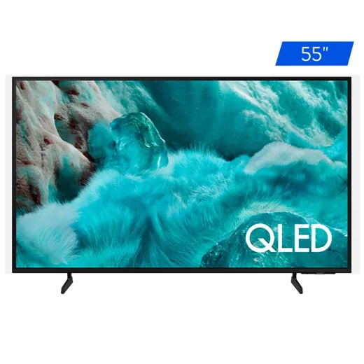
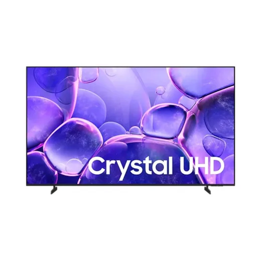

Samsung · Modelo QN50Q7FAA
Televisor Samsung 50" QLED 4K · QN50Q7FAA
L 9,695
Más barato en La Curacao
Precio en cada tienda
| Tienda | Precio | Antes | Disponibilidad | |
|---|---|---|---|---|
| La Curacao | L 9,695 | Disponible | Ver en tienda › | |
| Elektra | L 12,599 | Agotado | Ver en tienda › |
Precios referenciales tomados de cada tienda el 21 de noviembre de 2026. El precio válido es el que muestra la tienda al comprar.
Historial de precio
Lo seguimos desde el 1 de noviembre. Precio más bajo registrado: L 9,695 en La Curacao (16 de noviembre), igual que hoy. El precio no ha cambiado en ese tiempo.
Características
| Tamaño | 50" |
|---|---|
| Pantalla | 50" |
| Resolución | 4K UHD |
| Panel | QLED |
Descripción
El televisor Samsung 50 pulgadas QN50Q7FA usa tecnología QLED para colores más vivos y buen contraste en cada escena. Es una opción de buen tamaño para la sala principal de la casa, ideal para películas, series y deportes. Samsung es una marca reconocida en electrónica, lo que respalda la calidad de este televisor Samsung QLED.
Tamaño: 50 Pulgadas.
Resolución: 4K Ultra HD (3840 x 2160 píxeles).
Serie de Samsung: Q7F (Modelo de gama media-alta QLED).
Tecnología de Imagen: • Quantum Dot Technology (100% Volumen de color para colores más vibrantes y precisos).
• HDR10+ (Alto Rango Dinámico superior).
• Supreme UHD Dimming (Mejora el contraste y el detalle por zonas).
• Procesador Quantum (para optimización de imagen).
Otros televisores Samsung

Televisor Samsung 55" QLED 4K Smart · QN55Q7FAAL 9,796.05En 3 tiendas · más barato en Walmart Televisor Samsung 50" LED 4K Smart · UN50DU7000L 9,547En Elektra
Televisor Samsung 50" LED 4K Smart · UN50DU7000L 9,547En Elektra
Televisor Samsung 55" LED 4K Smart · UN55U8000FL 9,497En 3 tiendas · más barato en La Curacao Televisor Samsung 55" Crystal UHD 4K SmartL 9,995En Lady Lee
Televisor Samsung 55" Crystal UHD 4K SmartL 9,995En Lady Lee Televisor Samsung 43" Crystal UHD 4K · UN43DU7000L 10,000En Walmart
Televisor Samsung 43" Crystal UHD 4K · UN43DU7000L 10,000En Walmart Televisor Samsung 58" LED 4K Smart · UN58U8000FL 10,297En 6 tiendas · más barato en RadioShack
Televisor Samsung 58" LED 4K Smart · UN58U8000FL 10,297En 6 tiendas · más barato en RadioShack Televisor Samsung 55" LED 4K · UN55U8000HL 8,997En 4 tiendas · más barato en La Curacao
Televisor Samsung 55" LED 4K · UN55U8000HL 8,997En 4 tiendas · más barato en La Curacao Televisor Samsung 50" QLED 4K Smart · QN50Q60DAL 8,990En Diunsa
Televisor Samsung 50" QLED 4K Smart · QN50Q60DAL 8,990En Diunsa